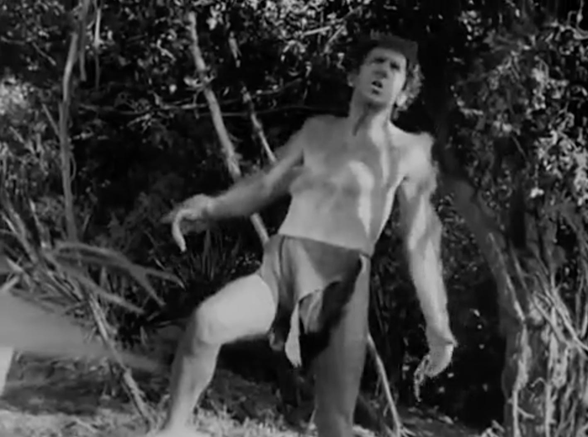
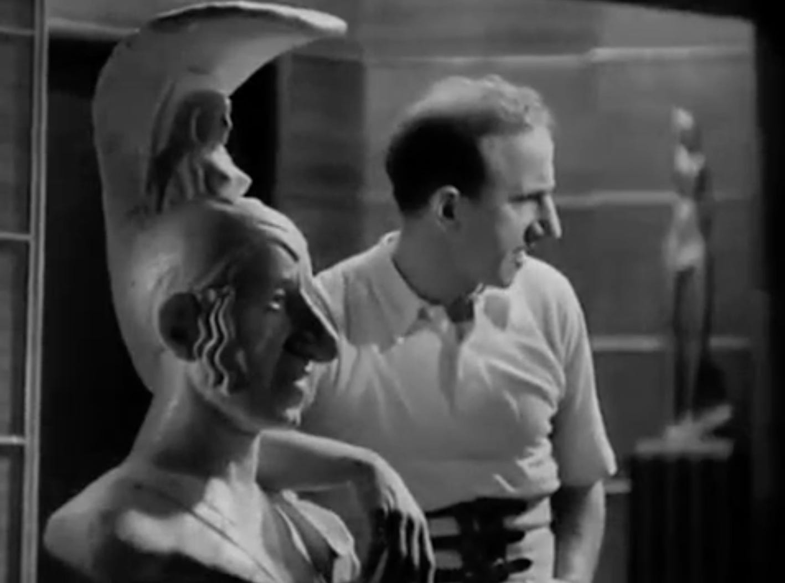
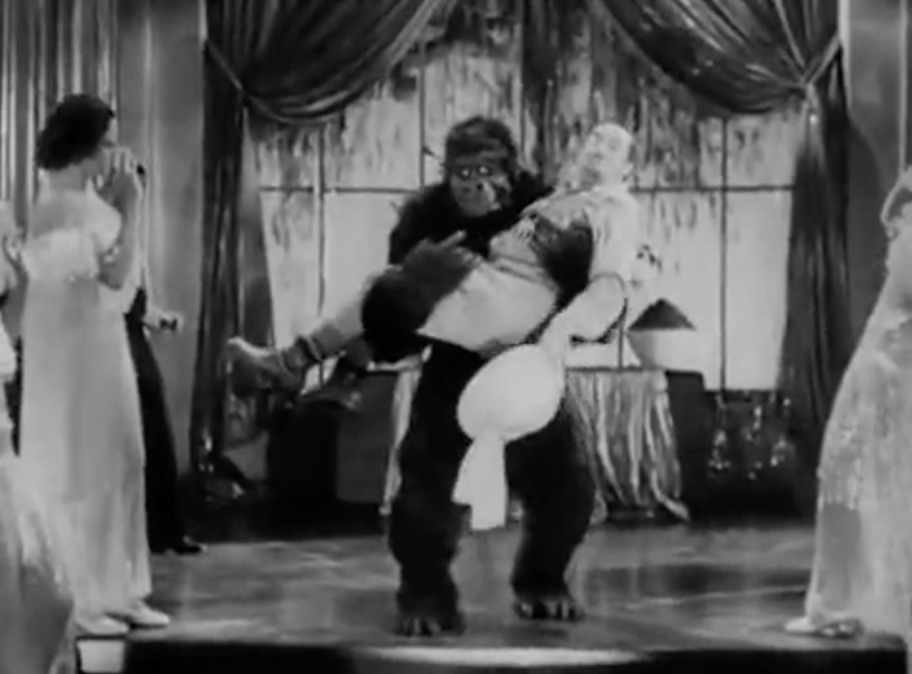
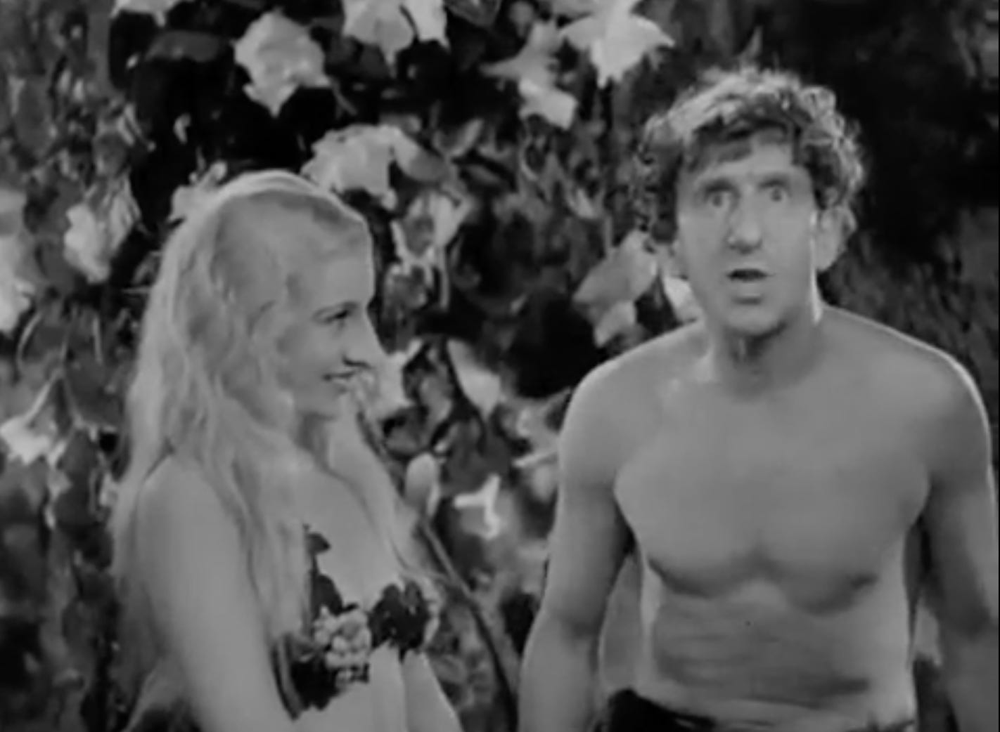
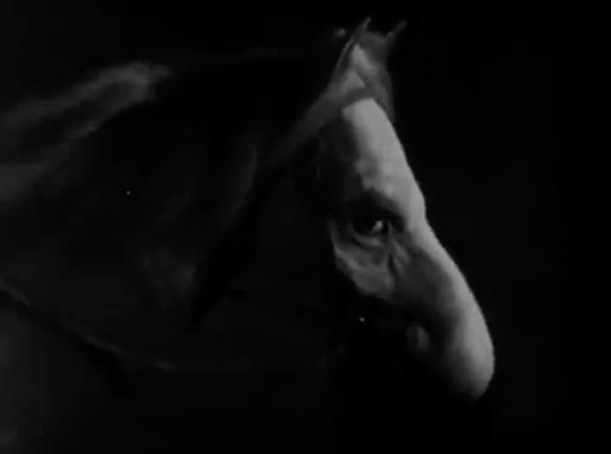
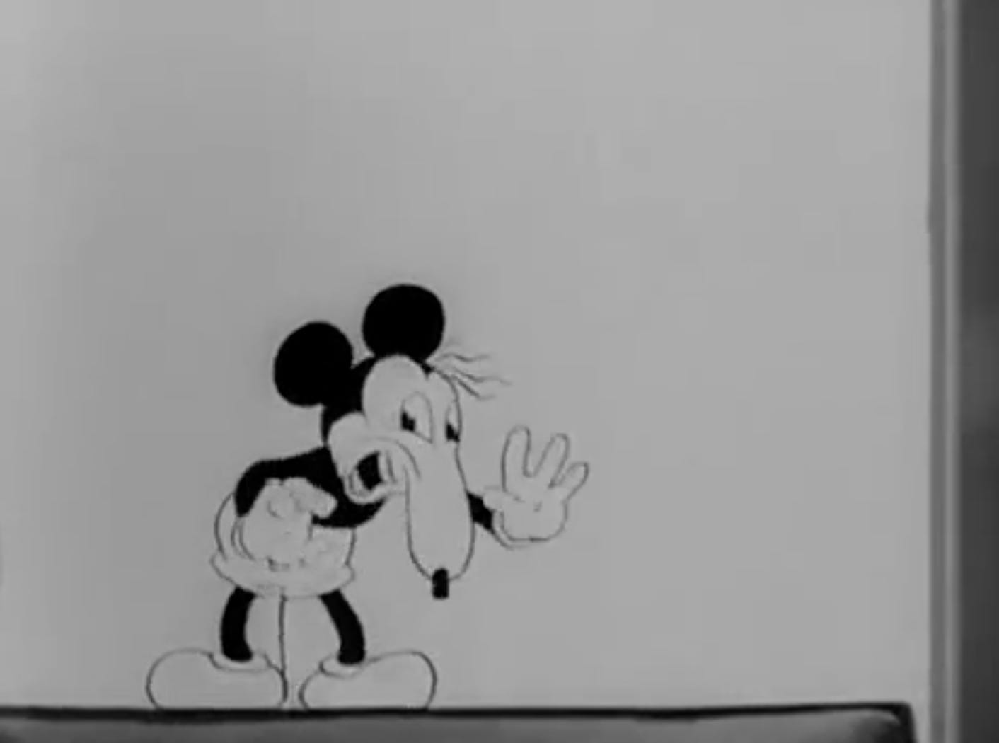
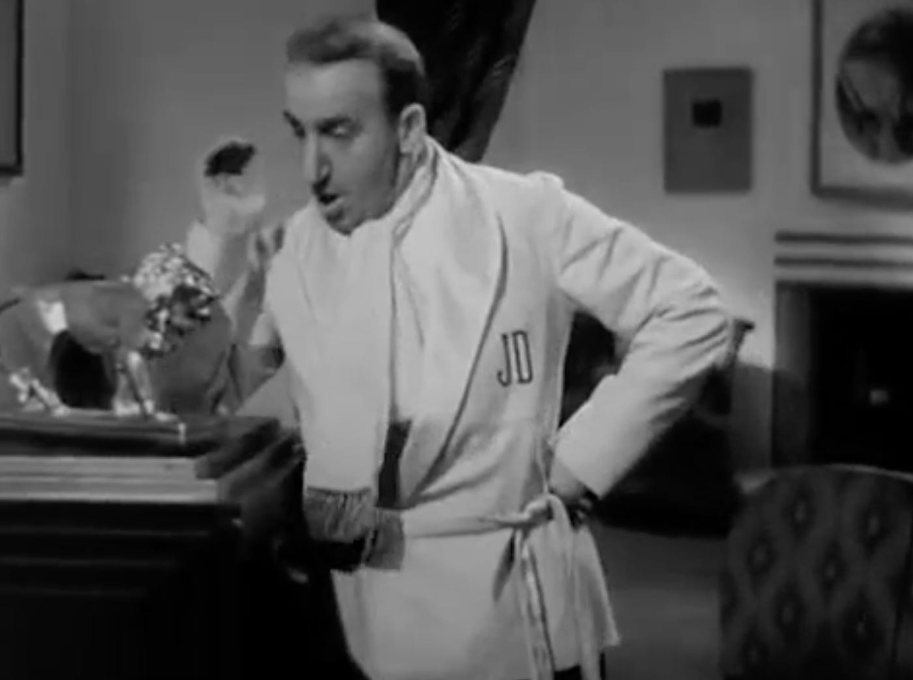

Ohhhhhh boy. Hollywood Party. 1934. Where do I even begin? I went into this film knowing it was a mess. Crazy. Unpredictable. Bad. I’m not sure that prepared me for what I watched (thank you, TCM, for airing this, shall we say, classic). Most of the actors were fairly new to me, with Jimmy Durante being the most familiar face, although I am used to seeing him in cartoon form in Frosty the Snowman (1969). I knew of Laurel and Hardy, but this was my first time watching them and was pleasantly surprised! As always, spoilers ahead!
Hollywood Party was absolutely DESTROYED by critics who called it “not much of a party. Too many stars and no entertainment” (Adair) and stated “I can’t figure out why they don’t take Jimmy Durante out and shoot him” (Mellon) (qtd. in Jenkins 108). Despite being the main character of the film, Jimmy Durante is listed second (technically third) in the cast, after Stan Laurel and Oliver Hardy, who only appear in the film towards the very end in a short, though memorable segment. The film was essentially made to be a revue but a plot was added and the segments had to be threaded together, all while writers, directors, and stars came and left the picture. Hollywood Party ended up being one of MGM’s most expensive films by that time and no director wanted credit for it (Barrios 405, 404). For an in depth look at the wild production of this film, I recommend checking out Henry Jenkins’ What Made Pistachio Nuts?.
The film begins with the producer (Richard Carle) of a new film telling the owner of a movie theatre that business will be even better next week after the Garbo picture when his new film, “Schnarzan the Conqueror” enters theatres. Already, so much to unpack here. For starters, the film is rife with references to film culture and general popular culture during the time as it tries desperately to stay relevant. Instead, it just makes you think how much you would rather be watching a Garbo picture than this garbage. Secondly, there’s Schnarzan. We enter the movie theatre to watch the trailer for “Schnarzan the Conqueror” played by, of course, Jimmy Durante in a Tarzan parody. Schnarzan is just as terrifying as he sounds, with a weird horn call that alerts all the jungle beasts to his presence. In the trailer, Schnarzan wrestles with a fake lion (and bites him?) to protect his Jane, Lupe Vélez. There’s some banter between him and the “jungle woman” and he pushes down a giant tree. The trailer ends and the producer guy claps.
I have so many questions. Is “Schnarzan the Conqueror” supposed to be a true adventure movie? Is it a comedy? Why did no one ever make “Schnarzan the Conqueror” into a real full-length film (ok, maybe I do know the answer to this question)? Did they glue fake hair on top of Jimmy’s body? How much is his real hair or did he have to shave for this one scene? I desperately need more Schnarzan lore.
Some guy leaving the theatre calls Schnarzan a cluck and says he won’t be going to see the movie. The owner of the theatre claims that the people are fed up with the fake lions that Schnarzan fights (Schnarzan is a series?!?) with the producer (Edwin Maxwell) of another film telling the owner that he’ll mop up with his film, “Liondora the Untamed.” However, both producers should try to find real lions for their films, and thus, we have our inciting incident! From here, the plot doesn’t sound too terrible, if not a little straightforward, but takes a sharp turn downhill when you learn they won’t be going to fight for lions in the jungle but instead will try to use the lions of Baron Munchausen who has a bunch of jungle animals in captivity. Jimmy has a couple of fun quotes and gags with his introduction where this idea is proposed to him that made me chuckle a bit under my breath but nothing to write home (or on here) about except for this one photo that I just have to share.
It is suggested that he entertain the Baron like he did Bernard Shaw and Professor Einstein. Jimmy says he’ll get “a flock of beautiful girls and give him a real African welcome” which made me a little nervous considering this is 1930s white Hollywood. He continues, “then, we’ll throw the biggest affair since the Boston Tea Party” which made me wonder if we’re going rah rah America *eagle screech* or something a little more… uncomfortable, shall we say. In a montage, we see that everybody is going to the Great Schnarzan’s party because who throws a better party than Schnarzan (although the invitation is signed James Durante)? Lupe calls Jimmy and is mad that she wasn’t invited to the party after getting kicked out of his last picture which is not very important other than starting the side quest of her trying to beat up Jimmy in real life and not just his photo which also becomes beat up after she stomps on it which did make me laugh. Yes, this movie is terrible but it has its moments!
We then get our first taste of Hollywood Party as a movie musical with the theme song featuring beautiful women dressed in wacky telephone wire outfits. The costumes and setting are glitzy and fun and the choreography and camerawork is reminiscent of Busby Berkeley full of legs and overhead shots (you can watch this musical number on the Film Around the Corner Instagram). There’s also some interesting editing of the women getting ready for the party that reminded me a bit of “Keep Young and Beautiful” from Roman Scandals (1933) which was choreographed by Berkeley. There’s even a reference to the Devil himself with the lyric “Satan sing out ‘yeah, man’” which is pretty dope pre-code fun. (This is definitely a scene in which I could get all film degree with a focus in Old Hollywood musicals on you, dear reader, so if anyone is interested in perhaps a bonus essay on this number alone as a paid subscriber special, do comment!)
After the musical number, we get introduced to the Clemps from Clemp City, Oklahoma. Harvey (Charles Butterworth), the patriarch, is the Millionaire Oil King, while his wife, Henrietta (Polly Moran), is the Oil Queen. They also have a daughter, Linda Clemp (June Clyde), who is quickly infatuated with a young man named Bob Benson (Eddie Quillan) who himself is a total creeper. To show how wealthy they are, Harvey often pulls out a thousand dollar bill and rips it up. Despite having wealth, they are clear outsiders in this star-studded party and want to mingle with the Hollywood elite and anyone with a title.
Meanwhile, Liondora (George Givot) decides he’s going to sneak into the party to get the lions by pretending to be “the Grand Royal Duke Spiros Dimitros Nikolaus Forfoltu-Varenikos from southern part Europe, good old Peloponniesus.” As a Greek-American, I love to see some Greek representation, even if it’s through a dialect actor like Givot or Parkyakarkus.
Robert Young plays Robert Young, one of Schnarzan’s party guests, who says a few words over the radio about the party. I do love me some Robert Young so I was excited to see him. He also says one of my favorite lines in the entire film: “Hello, Pansy! That was a girl, not a man.” Gotta love pre-code queerness! He also straight up tells a butler to kill a drunk man by telling him to take him to an empty pool to dive into which is… wow.
We get another song with a big band on a curtain with a massive crowd dancing below them. The song is “Feelin’ High,” which is how I wish I watched this movie. It’s really nothing more than your typical dance number at a fancy party in a 1930s musical. Jimmy kicks off the party and we are 17 minutes into a 68 minute film. Just for a bit of perspective.
Jimmy sees the Baron arriving and is ready to give him a royal welcome. We get a song welcoming the Baron and it is… interesting, to say the very least. For starters, the lyrics are surprisingly dull for the famed Rodgers and Hart who most likely wrote the song. Eventually the Natives come and join the musical number which was not as horrifically racist as I thought it was going to be. They come in singing and dancing while wearing exotic clothes and while it is surely uncomfortable, it doesn’t reach the levels of something like how the native people are depicted in King Kong (1933), which is far more problematic, in my opinion. Speaking of Kong, however, the camera pans over to show a gorilla carrying the Baron (Jack Pearl) bridal style because I would expect nothing less from this movie.
My reference to King Kong is not out of the blue. The gorilla is, in fact, the son of King Kong, named Ping Pong. “Pingy” ends his stint in the film by sticking his butt out at Jimmy (of course he does). Also, Jimmy definitely appears to be checking Ping Pong out as he leaves. The Baron keeps trying to say something but Jimmy and the chorus continuously cut the Baron off from speaking, at one point Jimmy and the Baron even waltzing together. So much of the humor in this film is incredibly stupid and should not make me laugh but I often can’t help but snort at the silly antics because I am a child, apparently. For example, we learn that literally all the Baron wanted to say was “hello.” It’s dumb but it’s funny and I am immature. The Baron kisses Jimmy’s cheeks, Jimmy blushes, and the scene ends with the two squeezing each other in an adorable hug.
Lupe sneaks into the party and tells Harvey Clemp (the Oil King, remember?) about how she wants to strangle Jimmy but ends up thinking Harvey is kind of cute. Meanwhile, Henrietta Clemp is with the Grand Royal Duke (who is actually Liondora, remember?) and he starts to pursue her. She seems… flattered? I think? Though she continuously tells him he mustn’t which starts to toe the uncomfortable line. He physically starts to force himself onto her which I’m assuming is supposed to be comedy but is very much not funny. Bob sees what’s going on and gets Harvey to come see what’s happening to his wife. Harvey says, “this is going to be good!” as he watches. Ew. Meanwhile, the Grand Royal Duke is literally pinning Henrietta down and biting her. Harvey says that she responds very well which makes me uncomfortable. He thinks about using the same techniques that the Grand Royal Duke is using and when he tries it on Lupe, she throws him over the garden wall. This scene is incredibly weird and gross to watch as it is essentially glorified sexual assault. Oddly, I couldn’t find many people talking about this, only just a brief mention once pretty much, which I guess speaks to how forgettable of a scene it is, though a scene that should not have existed in the first place.
Local Predator Number 2 Bob who is always getting way too close to Linda for my liking sings a duet with her to the song “I’ve Had My Moments.” I’ll admit that the song itself is cute, written by Gus Kahn and Walter Donaldson of “Makin’ Whoopee” fame (and it did have a life outside of this movie which is well deserved—I recommend checking out the Django Reinhardt version which doesn’t have lyrics but is really sweet). They do this weird flirting thing during the song with over-exaggerated goofy facial expressions to the point where you think they were Eleanor Powell except they can’t dance nearly as good. Also he might be gay because it was a little... you know… (apparently Quillan might have been queer). It also just keeps going on and on which makes the song become a bit exhausting to watch.
Thank goodness that’s over! Let’s see what less annoying sequence is nex— it’s the Three Stooges. Look, I’m not a Three Stooges hater by any means… but their schtick gets old pretty quickly for me and this sequence is no exception. Moe, Larry, and Curly are autograph hounds at the party to meet celebrities. Some professors getting out of a car seen the gang and then argue over how they are the perfect specimens of the Neanderthal, Androgynous, and Anthropedia by hitting them on their heads. Hardy har har. Thankfully the scene is over fairly quickly.
Meanwhile, Jimmy is having a scientific discussion about reincarnation with some professors. Apparently they do this every Wednesday night—who knew Jimmy Durante was such an intellectual! He launches into a bit of a song about reincarnation in which he tells the men about how he dreamed he was a butterfly. He says he can see all the way back to when he was Adam (you know, of Adam and Eve). He realizes his rib is missing and that he was promised a woman for that rib. Eve comes calling for “Daddy” and she looks like this:
Jimmy has a big nose, get it? It’s so funny and not at all overplayed. “A carbon copy! I’ve been ribbed!” If that wasn’t terrifying enough for you, we then get to meet Jimmy during the Revolutionary War. It’s set up so that you think Jimmy Durante was Paul Revere, but he actually was Paul Revere’s horse. Now I am putting this image in here for educational purposes only. Look at your own risk.
With a classic Jimmy “hotcha!” I think it is best we move on from reincarnation. Harvey Clemp gets the Baron’s lions for Liondora after bidding on them. After the wager is accepted by the Baron, screaming erupts about a mouse. Bet you can’t guess who it is… Yeah, it’s Mickey Mouse. Fucking Mickey Mouse is in this movie. Mickey is a little scamp though and I love him. Except for when he does a Jimmy Durante impression. Once again, viewer discretion is advised.
Jimmy is offended by this imposter, and rightfully so, and throws him against a wall after Mickey punches him in the nose (hehehehe). This movie has everything! Nose jokes! Dancing gorillas! Animal cruelty! All joking aside, this sequence is actually pretty cool and fun to watch early animation and live action interaction. This all leads into the Silly Symphony “The Hot Choc-late Soldiers” which is pretty cute if not a little disturbing (spoiler: they all die at the end????). However, due to brevity, I will not be delving into this short but I do recommend checking it out!
To get the lions back, because that’s still the main plot of the film, Jimmy is going to have to woo Mrs. Clemp, which is funny because she’s an ugly old lady, get it? Meanwhile, the real stars of the film arrive: Stan Laurel and Oliver Hardy. Nobody gives a shit about them though so they have the door closed on them. Laurel and Hardy want to see the Baron because, apparently, the lions were actually their own and the Baron bought them from him with a phony check so they want their lions back. They continue to ring the doorbell and are consistently rejected. Liondora rings the doorbell and is then hit on the head and knocked out, allowing Laurel and Hardy to enter the party and look for the Baron.
The film briefly cuts to Mrs. Clemp, who is singing “I’ve Had My Moments” and playing the piano when Jimmy enters, calling her an “infant prodigy” as he attempts to flatter her. She actually is a pretty good singer and could indeed have her picture “on every ashcan” as Jimmy proclaims will happen if he takes her under his wing.
Laurel and Hardy arrive at the bar where Lupe shows up and is refused alcohol by the request of Jimmy himself. She throws a tantrum and when Hardy tries to be polite and hands her back her shoe, she hits him on the head with it. This kicks off what is by far the best moment in the movie: a mostly silent physical comedy exchange between Lupe Vélez and Laurel and Hardy involving eggs. If you only take one thing away from this movie, it is to watch this scene. After this, it becomes clear why the pair was billed first and didn’t show up until the end of the film as they completely steal the show. Having never watched Laurel and Hardy, as far as I can remember, this made me instantly become a fan of them and I definitely want to watch more. I won’t go into too much detail about this scene because you should honestly just watch it and laugh like I did.
As Laurel and Hardy are chased out of the party by the doorman, they release the lions. One of them makes its way to the bedroom where Jimmy has asked Mrs. Clemp for the lions and tells her that he beat up the last one into a rug, pointing to the lion skin rug in his room. He ends up accidentally pouncing on the real lion and wrestles him down the stairs. Because of the fast editing, some of it is kind of convincing and a fun watch if not for Jimmy’s irritating commentary.
Jimmy hits his head on the steps and the “Hollywood Party” theme song plays over a sleeping Jimmy Durante along with other musical moments from the movie. Yes, this whole movie was a goddamn dream. If I wasn’t watching in public, I think I would have screamed in agony. I sat through 67 minutes (out of 68) of a DREAM?!?! I might have a concussion now after repeatedly hitting my head on the table. He fell asleep reading a Tarzan book, hence Schnarzan. His wife at the time wakes him up and tells him they need to get ready for Lupe’s party, the real Hollywood Party.
Well, that was 1934’s Hollywood Party… Nothing else to say. Do I recommend it? Not really, HOWEVER, it could be a fun time if you were watching it with friends while drunk. Just watch the Laurel and Hardy moment. 2.5/5 stars!
Thank you for reading my review of Hollywood Party (1934)! I apologize for the delay in posting, but hopefully my next review will have a quicker turnover (it’s hard to write about a movie you have no passion for in either direction, despite the fact that I had many thoughts about this movie). Feel free to discuss the film with me and others in the comments!
© Zoe Kaperonis 2024